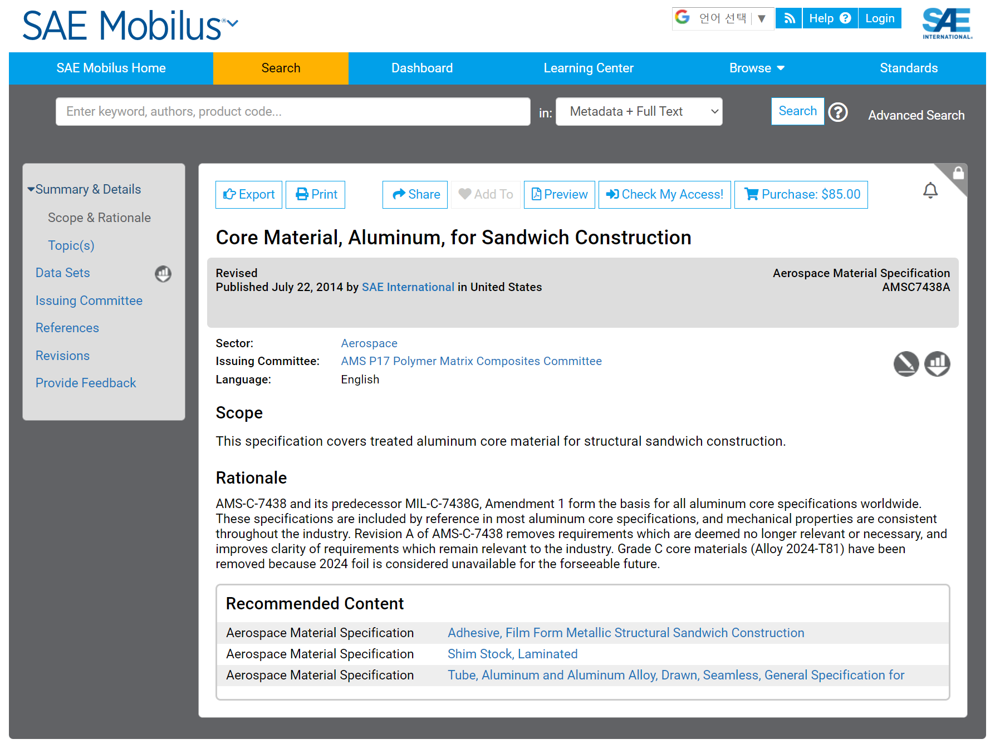

Ref : https://saemobilus.sae.org/content/amsc7438a
AMS-C-7438 and its predecessor MIL-C-7438G, Amendment 1 form the basis for all aluminum core specifications worldwide. These specifications are included by reference in most aluminum core specifications, and mechanical properties are consistent throughout the industry. Revision A of AMS-C-7438 removes requirements which are deemed no longer relevant or necessary, and improves clarity of requirements which remain relevant to the industry. Grade C core materials (Alloy 2024-T81) have been removed because 2024 foil is considered unavailable for the forseeable future.
